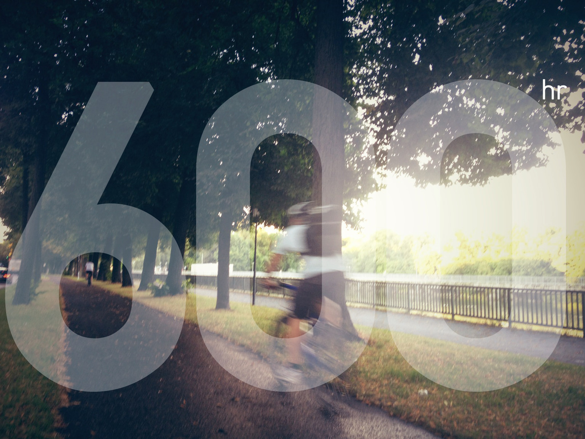

Tue, 14 Aug 2012 02:10:00 · munich · germany · life · shenanigans
as of today i have been in munich for total of

As of today, I have been in Munich for total of 600 hours…. and counting.
Curious to see what sort of shenanigans I will be committing (or thrown into). Embracing ambiguity. Thrive in chaos (or despite of). And although less epic, probably should start learning how to be human at some point…